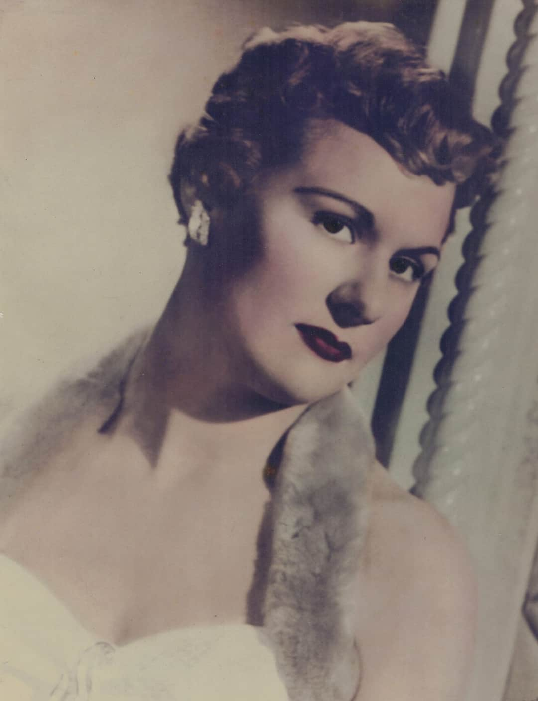

It is not about life after death.
Peter’s story begins and ends in the year 2020 during the invasion of the dreaded
Covid19 pandemic, killing indiscriminately. While being unable to fathom continuing
with life alone after the death of someone close to him, he knows he must carry on for the
sake of others. After a brief introduction about where he is now at the age of fifty-nine
handling traumas and tragedies, the story unfolds from his earliest memories.
The author discovered he was gay at an early age. Having his first sexual encounter
unusually expedient in life and believing homosexuality was acceptable by society based
on his mother’s career, he soon finds out the harsh realities of how the world judged
people like himself as unacceptable and deviant.
Raised Catholic, Peter couldn’t abide by the dogmatic Church deeming homosexuality as
sinful. His Catholic father, born in Italy and coming from a family of seventeen brothers
and sisters, thought God made a mistake with his son. Peter thought his father could
never accept him or love him after coming out of the closet. To complicate matters, his
father was an ex-communicated Catholic having been divorced with five other children.
His father then remarried Peter’s Canadian mother, also an ex-Catholic who turns out to
be an accredited psychic.
 This starts Peter down a road of spiritual self-discovery forever changing him.
Surrounded by the supernatural for most of his life, he has guidance from one cousin who
has always loved him, even when his family disowns him. Four special mentors he names
help guide him on his spiritual path, though at a great price. He would have to make
decisions affecting his future leading to traumas and tragedies he would face. Whether he
accepts his destiny is a mystery he must solve by his own choices in life.
This starts Peter down a road of spiritual self-discovery forever changing him.
Surrounded by the supernatural for most of his life, he has guidance from one cousin who
has always loved him, even when his family disowns him. Four special mentors he names
help guide him on his spiritual path, though at a great price. He would have to make
decisions affecting his future leading to traumas and tragedies he would face. Whether he
accepts his destiny is a mystery he must solve by his own choices in life.
“Alive After Dying…” is a nonfiction account delving deeply into the author’s past
where mysteries unravel tragedies, which come to light in expected ways. He writes his
story with the savvy of an investigative reporter using satire and gut-wrenching mystery
in an exploration of how he handles life’s seemingly insurmountable tests.
It is a story many can relate to who have experienced heartbreaking tragedy in love and
health, being judged with cruelty by their families and the world at large and feeling like
we don’t fit in because of the brainwashing powers of religion over the masses.
Since the author has been educated in both science and religion, some subjects Lancellotti covers may be considered blasphemous and shocking if “truth” is to be uncovered – not his truth, but the truth.